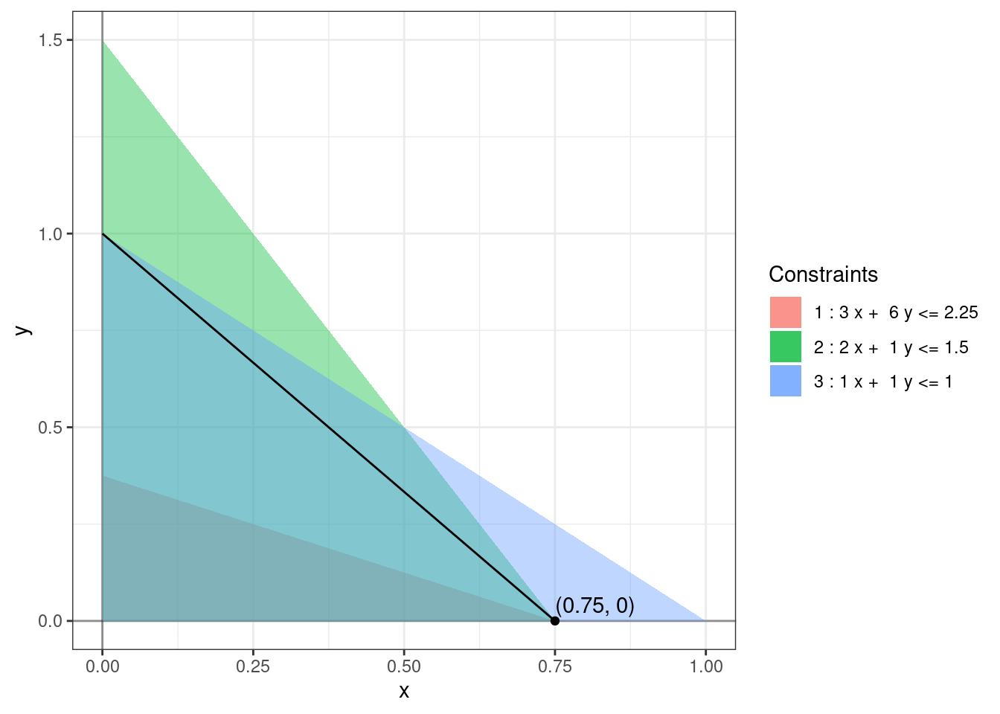
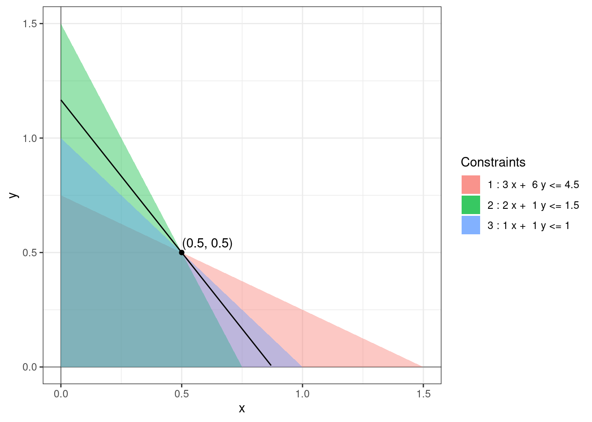
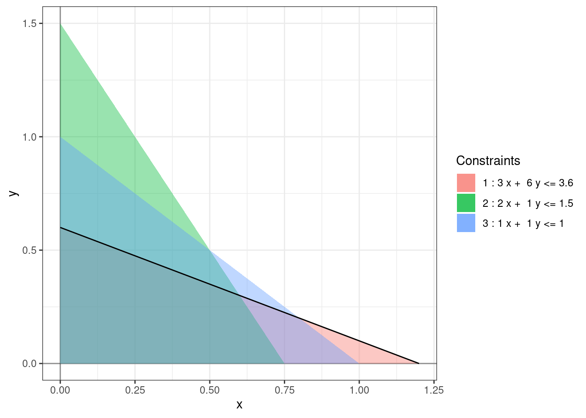
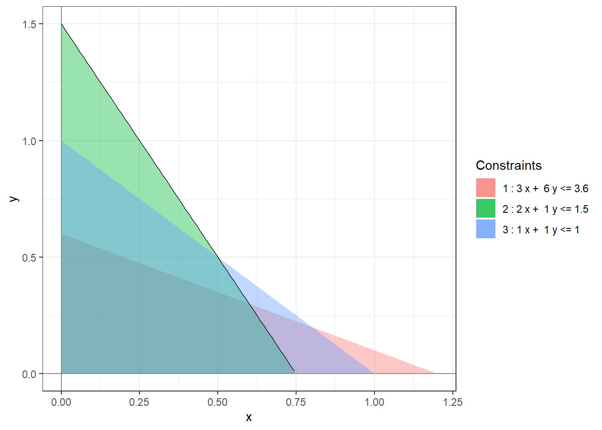

Chapter 9 Sensitivity Analysis
Linear programs are used to model real world problems. Such models are at best approximate and at worst inaccurate. Even when the models are accurate, the parameters in the model often change with time. As such, it is important to understand the sensitivity of our solution to changes in the model. This is called sensitivity analysis. We will focus on understanding the dependence of the optimal objective value of the standard linear program (2.1) on the constants \(b_i\) and \(c_j\).4
Throughout this chapter, we’ll assume that our linear programs have an optimal solution and fix an optimal solution for the primal and the corresponding dual solution for the dual.
9.1 Dictionaries Revisited
We will start by finding a succinct way to describe the dictionary at the optimal solution. Recall that the decision and slack variables are related to each other by the Equation (3.5) which can be written as: \[\begin{equation} \begin{bmatrix} A & I_m \end{bmatrix} \begin{bmatrix} x \\ w \end{bmatrix} = b. \tag{9.1} \end{equation}\] Let \(\widehat{A} := \begin{bmatrix} A & I_m \end{bmatrix}\). We’ll decompose \(\widehat{A}\) using the basic and non-basic variables.
Suppose we are at an optimal basic feasible solution. Let \(\mathcal{B}\) be the matrix formed by combining the columns of \(\widehat{A}\) corresponding to the basic variables at the optimal BFS and let \(\mathcal{N}\) be the matrix formed by combining the columns of \(\widehat{A}\) corresponding to the non-basic variables. Let \(x_{\mathcal{B}}\) be the vector of basic variables and \(x_{\mathcal{N}}\) be the vector of non-basic variables.
Remark. The matrices \(\mathcal{B}\) and \(\mathcal{N}\) are sub-matrices of the “initial” matrix \(\widehat{A}\) and not the tableau at the basic feasible solution. We’re using the basic feasible solution to decide which columns are basic and which are non-basic for the “inital” matrix \(\widehat{A}\).
By rearranging the columns of \(\widehat{A}\) if necessary, we can rewrite (9.1) as \[\begin{align*} && \begin{bmatrix} \mathcal{B} & \mathcal{N} \end{bmatrix} \begin{bmatrix} x_{\mathcal{B}} \\ x_{\mathcal{N}} \end{bmatrix} &= b,\\ \implies && \mathcal{B} x_{\mathcal{B}} + \mathcal{N} x_{\mathcal{N}} &= b, \\ \implies && \mathcal{B} x_{\mathcal{B}} &= b - \mathcal{N} x_{\mathcal{N}}. \end{align*}\] When we execute the simplex method, the matrix \(\mathcal{B}\) gets reduced to an \(n \times n\) matrix with \(n\) pivots. Hence, it must be invertible allowing us to further simplify as follows. \[\begin{equation} \implies x_{\mathcal{B}} = \mathcal{B}^{-1} b - \mathcal{B}^{-1} \mathcal{N} x_{\mathcal{N}}. \tag{9.2} \end{equation}\] This is nothing but the dictionary at the optimal BFS!
Lemma 9.1 Using the above notation, \(\mathcal{B}^{-1}b\) is the value of the basic variables at the optimal solution.
Proof. At a basic feasible solution, the non-basic variables \(x_{\mathcal{N}}\) equal 0. Plugging in \(x_{\mathcal{N}} = \vec{0}\) in Equation (9.2) gives us the desired result.
Example 9.1 Consider Example (1.2) again. At the optimal solution \(w_1\) and \(w_2\) are non-basic and have the value 0, and \(x\), \(y\), and \(w_3\) are basic with values \(0.3\), \(0.6\), and \(0.9\), respectively. Using the above notation, we have \[\begin{align*} \mathcal{B} = \begin{bmatrix} 3 & 6 & 0 \\ 2 & 1 & 0 \\ 1 & 1 & 1 \end{bmatrix}, x_{\mathcal{B}} = \begin{bmatrix} x \\ y \\ w_3 \end{bmatrix}, \\ \mathcal{N} = \begin{bmatrix} 1 & 0 \\ 0 & 1 \\ 0 & 0 \end{bmatrix}, x_{\mathcal{N}} = \begin{bmatrix} w_1 \\ w_2 \end{bmatrix}. \end{align*}\] Using Equation (9.2) the dictionary at the optimal solution becomes \[\begin{align*} \begin{bmatrix} x \\ y \\ w_3 \end{bmatrix} &= \begin{bmatrix} 3 & 6 & 0 \\ 2 & 1 & 0 \\ 1 & 1 & 1 \end{bmatrix}^{-1} \begin{bmatrix} 3.6 \\ 1.5 \\ 1 \end{bmatrix} - \begin{bmatrix} 3 & 6 & 0 \\ 2 & 1 & 0 \\ 1 & 1 & 1 \end{bmatrix}^{-1} \begin{bmatrix} 1 & 0 \\ 0 & 1 \\ 0 & 0 \end{bmatrix} \begin{bmatrix} w_1 \\ w_2 \end{bmatrix} \\ & = \begin{bmatrix} -1/9 & 2/3 & 0 \\ 2/9 & -1/3 & 0 \\ -1/9 & -1/3 & 1 \end{bmatrix} \begin{bmatrix} 3.6 \\ 1.5 \\ 1 \end{bmatrix} - \begin{bmatrix} -1/9 & 2/3 & 0 \\ 2/9 & -1/3 & 0 \\ -1/9 & -1/3 & 1 \end{bmatrix} \begin{bmatrix} 1 & 0 \\ 0 & 1 \\ 0 & 0 \end{bmatrix} \begin{bmatrix} w_1 \\ w_2 \end{bmatrix} \\ & = \begin{bmatrix} 0.6 \\ 0.3 \\ 0.1 \end{bmatrix} - \begin{bmatrix} -1/9 & 2/3 \\ 2/9 & -1/3 \\ -1/9 & -1/3 \end{bmatrix} \begin{bmatrix} w_1 \\ w_2 \end{bmatrix}. \end{align*}\] This is precisely the dictionary (3.3) at the optimal solution.
9.2 Range of Optimality - Constraints
We want to analyze the change in the optimal solution as we change the constraint upper bounds \(b_i\). It is likely that by changing \(b_i\) we change the optimal solution. However, in a good model, this change should not be abrupt. This can be achieved by requiring the set of basic and non-basic variables to remain unchanged. In this case, the equation (9.2) will still be the equation describing the dictionary at the optimal solution and the change in \(b_i\) will result in a differentiable (in fact, linear) change in \(x_{\mathcal{B}}\).
Example 9.2 Suppose we vary \(b_3 = 1\) in Example (1.2). One can check that at the optimal solution \(w_1\) and \(w_2\) are non-basic as long as \(b_3 > 0.9\). Thus we can say that out model is a good model as long as the error in \(b_3\) is less than \(0.1\).
Suppose we change \(b_i\) to \(b_i + \delta\), where \(\delta\) is a real number, and leave all the other
constants unchanged. This is equivalent to changing \(b\) to \(b + \delta e_i\) where \(e_i\) is the
\(i^{th}\) standard basis vector of \(\mathbb{R}^m\). This changes equation
(9.2) to
\[\begin{align*}
x_{\mathcal{B}}
&= \mathcal{B}^{-1} b + \delta \mathcal{B}^{-1} e_i - \mathcal{B}^{-1} \mathcal{N} x_{\mathcal{N}} \\
&= \mathcal{B}^{-1} b + \delta (\mathcal{B}^{-1})_{\_i} - \mathcal{B}^{-1} \mathcal{N} x_{\mathcal{N}}.
\end{align*}\]
where \((\mathcal{B}^{-1})_{\_i}\) denotes the \(i^{th}\) column of \(\mathcal{B}^{-1}\).
Note that the coefficients of \(x_{\mathcal{N}}\) remain unchanged. So, for this dictionary to stay optimal we only need the constants to remain non-negative i.e. \[\begin{equation} \mathcal{B}^{-1} b + \delta (\mathcal{B}^{-1})_{\_i} \ge 0. \tag{9.3} \end{equation}\]
Proposition 9.1 The range of optimality for \(b_i\) is the interval \([b_i + \delta_-, b_i + \delta_+]\) such that \(\mathcal{B}^{-1} b + \delta (\mathcal{B}^{-1})_{\_i} \ge 0\) for all \(\delta \in [\delta_-, \delta_+]\).
In practice, Equation (9.3) gives us \(m\) inequalities which need to be simultaneously satisfied. These give us candidate values for \(\delta\) some of which are positive and some of which are negative. We then choose \(\delta_+\) to be the smallest positive value and \(\delta_-\) to be the largest negative value. If \(\delta_+\) does not exist then the upper bound is \(\infty\) and if \(\delta_-\) does not exist then the lower bound is \(-\infty\). If either \(\delta_+\) or \(\delta_-\) is 0 then the linear program is degenerate. In this case, our program is very sensitive to perturbations in \(b_i\).
Example 9.3 Let us find the range of optimality for \(b_1 = 3.6\), \(b_2=1.5\), and \(b_3 = 1\) in (1.2) using our calculations in Example 9.1. We know that \[\begin{align*} \mathcal{B}^{-1} = \begin{bmatrix} -1/9 & 2/3 & 0 \\ 2/9 & -1/3 & 0 \\ -1/9 & -1/3 & 1 \end{bmatrix}. \end{align*}\] Using \(i = 1\) and Lemma 9.1 in Equation (9.3) we get \[\begin{align*} \begin{bmatrix} 0.6 \\ 0.3 \\ 0.1 \end{bmatrix} + \delta \begin{bmatrix} -1/9 \\ 2/9 \\ -1/9 \end{bmatrix} \ge 0 \end{align*}\] which gives us the inequalities \[\begin{align*} \begin{array}{lrlrrll} 0.6 + \delta (-1/9) &\ge & 0 & \implies & \delta &\le & 0.6 (9) = 5.4 \\ 0.3 + \delta (2/9) &\ge & 0 & \implies & \delta &\ge & -0.3 (9/2) = -1.35 \\ 0.1 + \delta (-1/9) &\ge & 0 & \implies & \delta & \le & 0.1 (9) = 0.9. \end{array} \end{align*}\] So, \(\delta_- = -1.35\) and \(\delta_+ = \min(5.4, 0.9) = 0.9\) and the range of optimality for \(b_1\) is \([3.6 - 1.35, 3.6 + 0.9] = [2.25, 4.5]\).
Using \(i = 2\) and Lemma 9.1 in Equation (9.3) we get \[\begin{align*} \begin{bmatrix} 0.6 \\ 0.3 \\ 0.1 \end{bmatrix} + \delta \begin{bmatrix} 2/3 \\ -1/3 \\ -1/3 \end{bmatrix} \ge 0 \end{align*}\] which gives us the inequalities \[\begin{align*} \begin{array}{lrlrrll} 0.6 + \delta (2/3) &\ge& 0 & \implies & \delta &\ge& - 0.6 (3/2) = -0.9 \\ 0.3 + \delta (-1/3) &\ge &0 & \implies & \delta &\le &0.3 (3) = 0.9 \\ 0.1 + \delta (-1/3) &\ge &0 & \implies & \delta & \le& 0.3 (1) = 0.3. \end{array} \end{align*}\] So, \(\delta_- = -0.9\) and \(\delta_+ = \min(0.3, 0.9) = 0.3\) and the range of optimality for \(b_2\) is \([1.5 - 0.9, 1.5 + 0.3] = [0.6, 1.8]\).
Using \(i = 3\) and Lemma 9.1 in Equation (9.3) we get \[\begin{align*} \begin{bmatrix} 0.6 \\ 0.3 \\ 0.1 \end{bmatrix} + \delta \begin{bmatrix} 0 \\ 0 \\ 1 \end{bmatrix} \ge 0 \end{align*}\] which gives us \(\delta \ge -0.1\) and so the range of optimality for \(b_3\) is \([1 - 0.1, \infty) = [0.9, \infty)\).
The following figures show the optimal solutions at the extreme ends of the range of optimality of \(b_1\).

9.3 Shadow Prices
For this section, assume that neither of \(\delta_+\) or \(\delta_-\) is zero. We can use Lemma 9.1 to find the rate of change of the optimal solution with respect to \(b_i\). Call the objective function \(\mathbb{O} = c^{T} x\). We think of \(\mathbb{O}\) as being a function of \(b_i\), \(c_j\), and \(a_{ij}.\) Using Lemma 9.1 we get \[\begin{align*} \dfrac{\partial x_{\mathcal{N}}}{\partial b_i} &= 0 \end{align*}\] as the non-basic variables remain 0 when we perturb \(b_i\) within the range of optimality, and \[\begin{align*} \dfrac{\partial x_{\mathcal{B}_j}}{\partial b_i} &= j^{th} \mbox{ row of } \dfrac{\partial \mathcal{B}^{-1}b}{\partial b_i} \\ &= (\mathcal{B}^{-1})_{ji} \\ \end{align*}\] where \(x_{\mathcal{B}_j}\) denotes the \(j^{th}\) basic variable at the optimal solution. Using these equations we can find the rate of change of the optimal solution \(\mathbb{O}\) with respect to \(b_i\). We start by re-indexing the variables and objective coefficients using the basic and non-basic variables. \[\begin{align*} \mathbb{O} &= c^T x \\ &= c^T_{\mathcal{B}} x_{\mathcal{B}} + c^T_{\mathcal{N}} x_{\mathcal{N}} \\ \implies \dfrac{\partial \mathbb{O}}{\partial b_i} &= c^T_{\mathcal{B}} \dfrac{\partial x_{\mathcal{B}}}{\partial b_i} + c^T_{\mathcal{N}} \dfrac{\partial x_{\mathcal{N}}}{\partial b_i} \\ &= c^T_{\mathcal{B}} (\mathcal{B}^{-1})_{\_i} \end{align*}\] By strong duality, we know that the primal objective value equals the dual objective value i.e. \[\begin{align*} \mathbb{O} &= b_1 y_1 + \cdots + b_m y_m \end{align*}\] So, \(\partial \mathbb{O}/\partial b_i = y_i\). Because of this result, \(y_i\) is also called the shadow price or the marginal cost of the \(i^{th}\) constraint. This is an extremely important interpretation of (non-degenerate) dual optimal solutions. This is why duality theory naturally arises in the study of linear programs.
Theorem 9.1 For a non-degenerate linear program, the dual optimal solution is given by \((\mathcal{B}^{-1})^Tc_{\mathcal{B}}\).
Proof. Using the rate of change calculation above, we get \(y_i = c^T_{\mathcal{B}} (\mathcal{B}^{-1})_{\_i}\). We then combine all the coordinates into a vector to get the desired result.
This theorem provides yet another method of finding the dual optimal solution without having to solve the dual linear program.
Example 9.4 For the linear program (1.2), the objective function is \[\begin{align*} \mathbb{O} & = 4 x + 3y \\ & = 4x + 3y + 0 w_3 + 0 w_1 + 0 w_2 \end{align*}\]
So, \(c_{\mathcal{B}} = \begin{bmatrix}4 \\ 3 \\ 0 \end{bmatrix}\) and \(c_{\mathcal{N}} = \begin{bmatrix}0 \\ 0 \end{bmatrix}\). Using the value of \(\mathcal{B}^{-1}\) calculated above, we get \[\begin{align*} y & = (\mathcal{B}^{-1})^Tc_{\mathcal{B}} \\ & = \begin{bmatrix} -1/9 & 2/9 & -1/9 \\ 2/3 & -1/3 & -1/3 \\ 0 & 0 & 1 \end{bmatrix} \begin{bmatrix} 4 \\ 3 \\ 0 \end{bmatrix}\\ & = \begin{bmatrix} 2/9 \\ 5/3 \\ 0 \end{bmatrix}. \end{align*}\] To check that this is indeed dual-optimal, we calculate the dual-objective value at this solution \[\begin{align*} b^T y & = 3.6 (2/9) + 1.5 (5/3) + 0 (1) \\ &= 3.3 \end{align*}\] which equals the optimal objective value of the primal. One can check that this solution is also dual-feasible and hence is the dual-optimal solution by Certificate of Optimality (Theorem 8.3).
9.4 Range of Optimality - Objective
We repeat the same analysis for the objective coefficients - how far can we change the objective coefficient \(c_j\) without changing the set of basic and non-basic variables at the optimal solution? In this case, we are not changing the constraints and therefore the feasible region remains unchanged and not changing the set of basic and non-basic variables implies that the optimal solution (and not just the optimal objective value) also remains unchanged. So, this question is the same as asking - how far can we change the objective coefficient \(c_j\) without changing the optimal solution?
We can redo the entire analysis for the objective coefficients from scratch. However, duality theory provides a faster way to do this as performing sensitivity analysis on the objective coefficients of the primal is the same as performing sensitivity analysis on the constraints of the dual. Consider the standardized dual \[\begin{equation*} \begin{array}{lrll} \mbox{maximize: } & -c_0 -b^T y \\ \mbox{subject to: } & -A^T y & \leq & -c \\ & y & \geq & 0. \end{array} \end{equation*}\] Using Equation (9.3) for this dictionary we get the range of optimality for \(-c_j\) to be \[\begin{equation} (-\mathcal{B}_d)^{-1} (-c) + \delta (-\mathcal{B}_d^{-1})_{\_j} \ge 0. \end{equation}\] where \(-\mathcal{B}_d\) is formed by combining the dual-basic columns of \(\begin{bmatrix} -A^T & I_n\end{bmatrix}\) and so \(\mathcal{B}_d\) is formed by combining the dual-basic columns of \(\begin{bmatrix} A^T & -I_n\end{bmatrix}\). This simplifies to \[\begin{equation} \mathcal{B}_d^{-1} c - \delta (\mathcal{B}_d^{-1})_{\_j} \ge 0. \end{equation}\] Note that this is the range of optimality for \(-c_j\). To get the range of optimality for \(c_j\) we need to replace \(\delta\) with \(-\delta\) to get \[\begin{equation} \mathcal{B}_d^{-1} c + \delta (\mathcal{B}_d^{-1})_{\_j} \ge 0. \end{equation}\]
Finally, by Lemma 9.1, \(\mathcal{B}_d^{-1} c\) is the vector of values of the dual basic variables. Hence we get,
Proposition 9.2 The range of optimality for \(c_j\) is the interval \([c_j + \delta_-, c_j + \delta_+]\) such that \(y_{\mathcal{B}} + \delta (\mathcal{B}_d^{-1})_{\_j} \ge 0\) for all \(\delta \in [\delta_-, \delta_+]\).
By a happy accident all the negative signs have cancelled out and the equation for finding the range of optimality for the objective coefficients has the same form as the one for finding the range of optimality for the constraints!
Theorem 9.2 At an optimal BFS, the range of optimality for the constraints and the objective functions can be computed using the following formulae:
Range of optimality for \(b_i\): \[\begin{equation} x_{\mathcal{B}} + \delta (\mathcal{B}^{-1})_{\_i} \ge 0, \end{equation}\]
Range of optimality for \(c_j\): \[\begin{equation} y_{\mathcal{B}} + \delta (\mathcal{B}_d^{-1})_{\_j} \ge 0, \end{equation}\]
where \(\mathcal{B}\) is formed by combining the primal-basic columns of \(\begin{bmatrix} A & I_m \end{bmatrix}\), \(x_{\mathcal{B}}\) is the value of the primal basic variables, \(\mathcal{B}_d\) is formed by combining the dual-basic columns of \(\begin{bmatrix} A^T & -I_n \end{bmatrix}\), and \(y_{\mathcal{B}}\) is the value of the dual basic variables.
Finally, to find \(\mathcal{B}_d\) we note that by complementary slackness (Theorem 8.4), if the linear program is non-degenerate then the dual basic variables correspond to the primal non-basic variables (as the dual basic variables must be non-zero).5
Example 9.5 Consider the linear program (1.2) again. At the optimal solution, as \(w_1\) and \(w_2\) are non-basic, the corresponding dual variables (\(y_1\) and \(y_2\)) will be basic for the dual linear program (7.2). This gives us \[\begin{align*} \mathcal{B}_d &= \begin{bmatrix} 3 & 2 \\ 6 & 1 \end{bmatrix} \\ \implies \mathcal{B}_d^{-1} &= \begin{bmatrix} -1/9 & 2/9 \\ 2/3 & -1/3 \end{bmatrix}. \end{align*}\]
From Example 9.4, we know that \(y_1 = 2/9\) and \(y_2 = 5/3\) at the dual optimal solution. Using these, we can now find the range of optimality for the objective coefficients.
To find the range of optimality for \(c_1 = 4\) we solve \[\begin{align*} \begin{bmatrix} 2/9 \\ 5/3 \end{bmatrix} + \delta \begin{bmatrix} -1/9 \\ 2/3 \end{bmatrix} \ge 0 \end{align*}\] which gives us the inequalities \[\begin{align*} \begin{array}{lrlrrll} 2/9 + \delta (-1/9) & \ge & 0 & \implies & \delta & \le & 2 \\ 5/3 + \delta (2/3) & \ge & 0 & \implies & \delta & \ge & -5/2 \end{array} \end{align*}\] So, \(\delta_- = -5/2\) and \(\delta_+ = 2\) and the range of optimality for \(c_1\) is \([4 - 5/2, 4 + 2] = [1.5, 6]\).
To find the range of optimality for \(c_2 = 3\) we solve \[\begin{align*} \begin{bmatrix} 2/9 \\ 5/3 \end{bmatrix} + \delta \begin{bmatrix} 2/9 \\ -1/3 \end{bmatrix} \ge 0 \end{align*}\] which gives us the inequalities \[\begin{align*} \begin{array}{lrlrrll} 2/9 + \delta (2/9) & \ge & 0 & \implies & \delta & \ge & -1 \\ 5/3 + \delta (-1/3) & \ge & 0 & \implies & \delta & \le & 5 \end{array} \end{align*}\] So, \(\delta_- = -1\) and \(\delta_+ = 5\) and the range of optimality for \(c_2\) is \([3 - 1, 3 + 5] = [2, 8]\).
The following figures show the (infinitely many) optimal solutions at the extreme ends of the range of optimality of \(c_1\).

This is not to say that the sensitivity of the optimal objective value to the constants \(a_{ij}\) is less important. Rather, such an analysis is beyond the scope of this class.↩︎
This statement is true even for degenerate linear programs but in this case the proof is more subtle and requires the use of strong duality (Theorem 8.2).↩︎